Libros caralludos...
Algunos de mis libros favoritos. Libros caralludos que he leído, tocado, vivido, viajado...
Y recuerda que tienes derecho a no leer, a saltarte páginas, a no terminar un libro, a releer lo que quieras y donde quieras, a leer en voz alta, a leer en silencio... A leer.
Los días Felices
Mara Torres, 2017

La vida imaginaria
Mara Torres, 2012
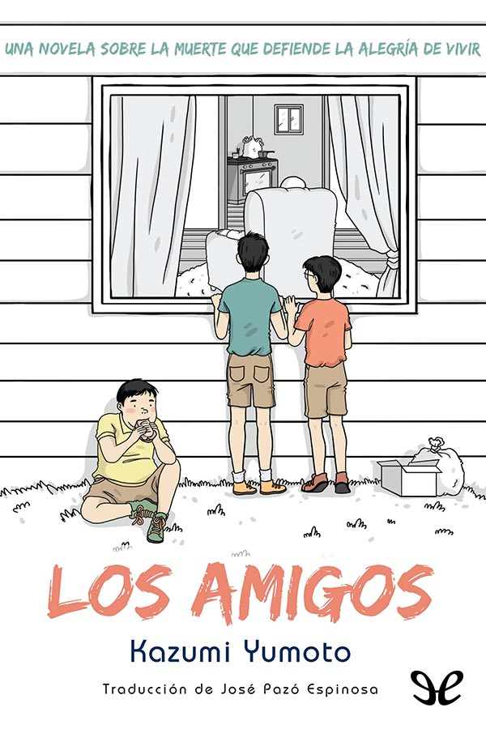
Los amigos
Kazumi Yumoto, 1992
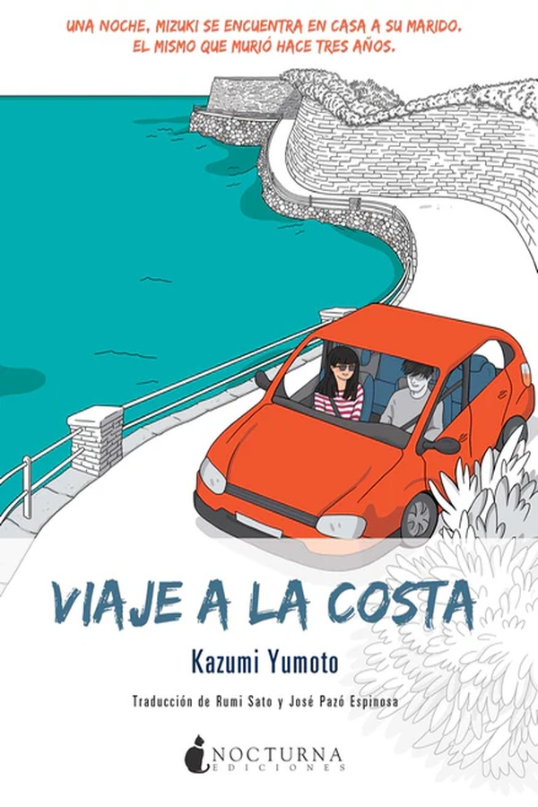
Viaje a la costa
Kazumi Yumoto, 2012
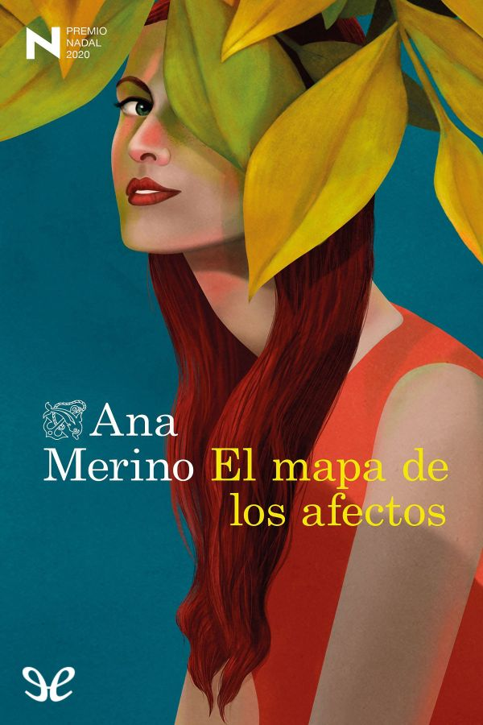
El mapa de los afectos
Ana Merino, 2020

Ficciones
Jorge Luis Borges, 1944
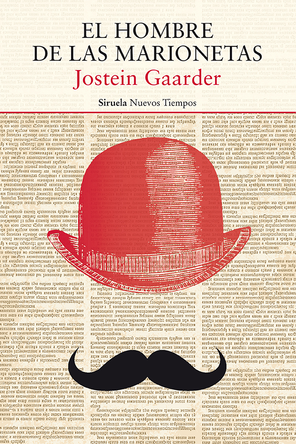
El hombre de las marionetas
Jostein Gaarder, 2019
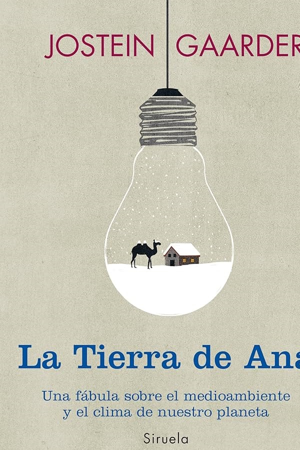
La tierra de Ana
Jostein Gaarder, 2013
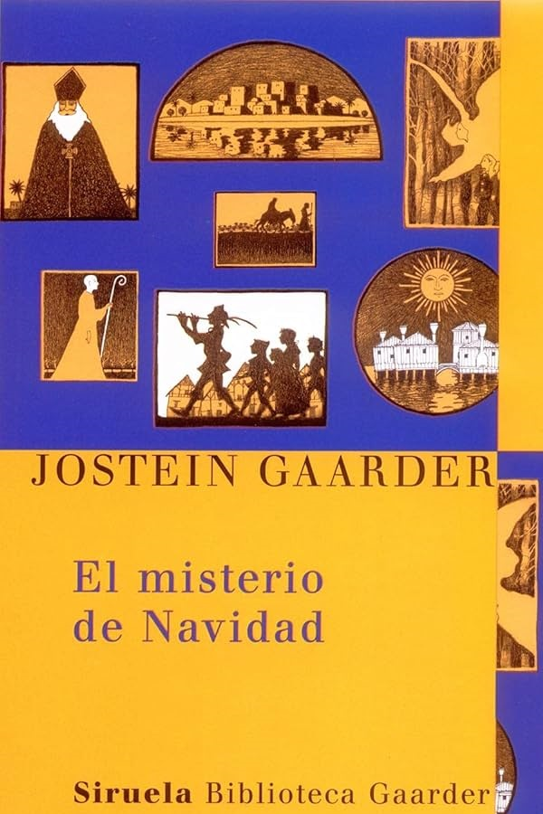
El misterio de la Navidad
Jostein Gaarder, 1992
El mundo de Sofía
Jostein Gaarder, 1991
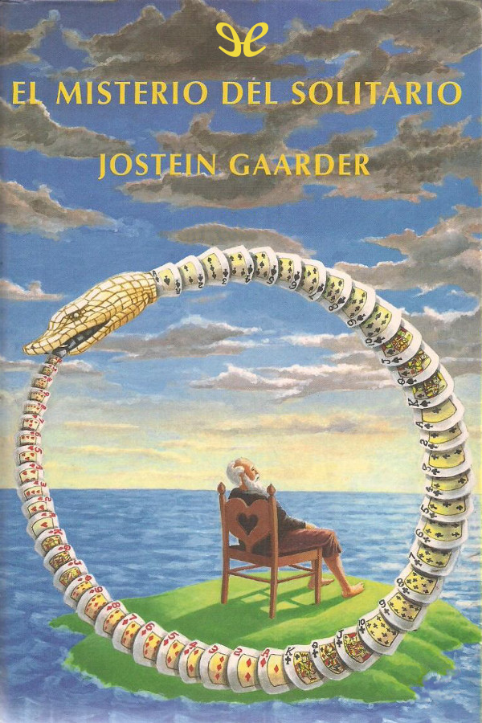
El misterio del solitario
Jostein Gaarder, 1990
El enigma y el espejo
Jostein Gaarder, 1993

Me pregunto
Jostein Gaarder, 2012
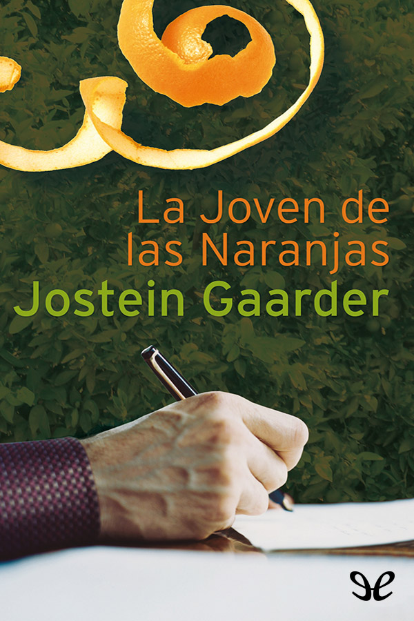
Jostein Gaarder, 2003
La joven de las naranjas
Jostein Gaarder, 2003
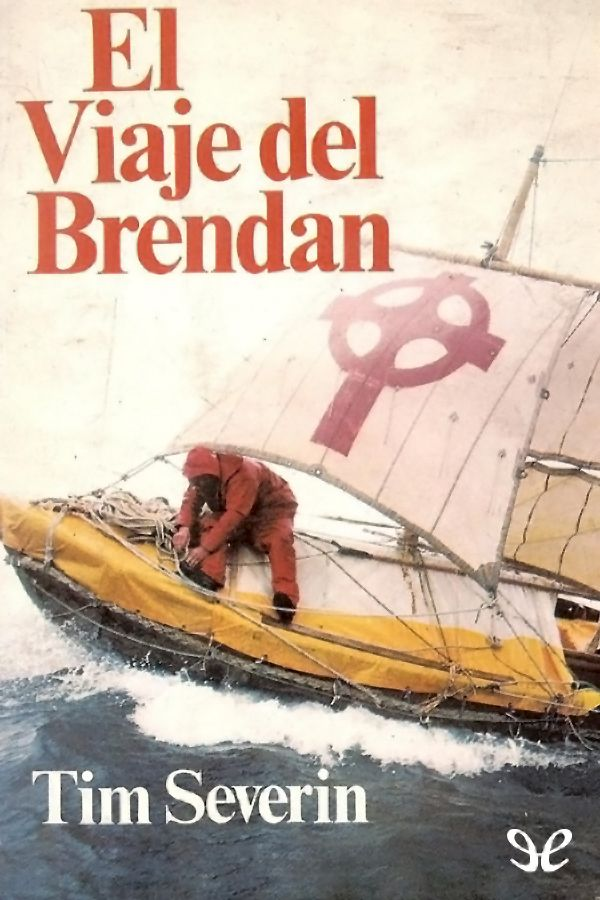
El viaje de Brendan
Tim Severin, 1980
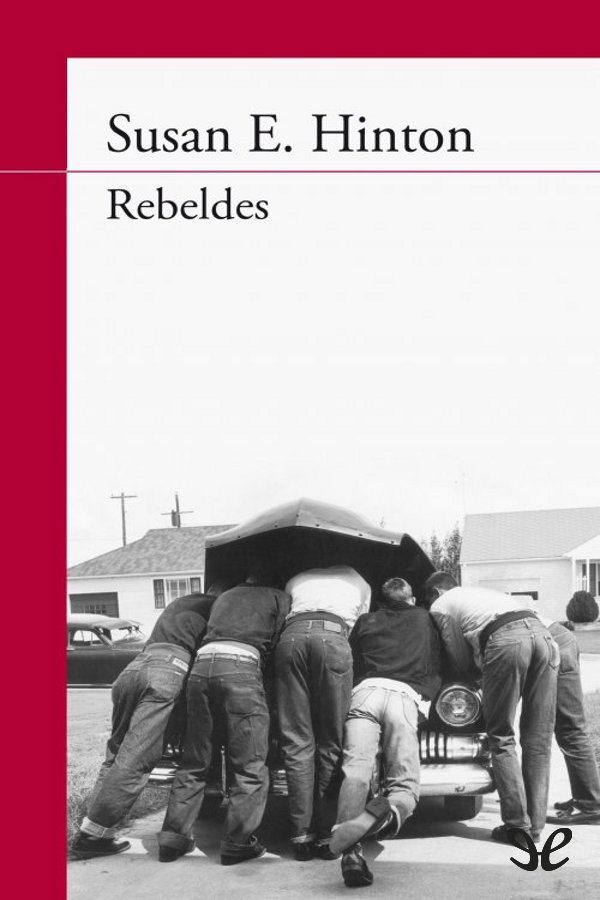
Rebeldes
Susan E. Hinton, 1967
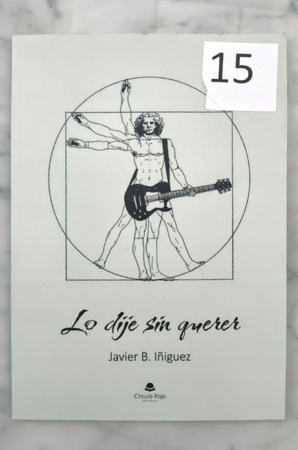
Lo dije sin querer
Javier B. Iñiguez, 2023
El ángel de la ciudad
Eva Garcia Sáenz de Urturi, 2023
El libro negro de las horas
Eva Garcia Sáenz de Urturi, 2022
Los señores del tiempo
Eva Garcia Sáenz de Urturi, 2018
Los ritos del agua
Eva Garcia Sáenz de Urturi, 2017
El silencio de la ciudad blanca
Eva Garcia Sáenz de Urturi, 2016
Antonio Vega. Una vida entre las cuerdas
Mangela Ronda, 2023
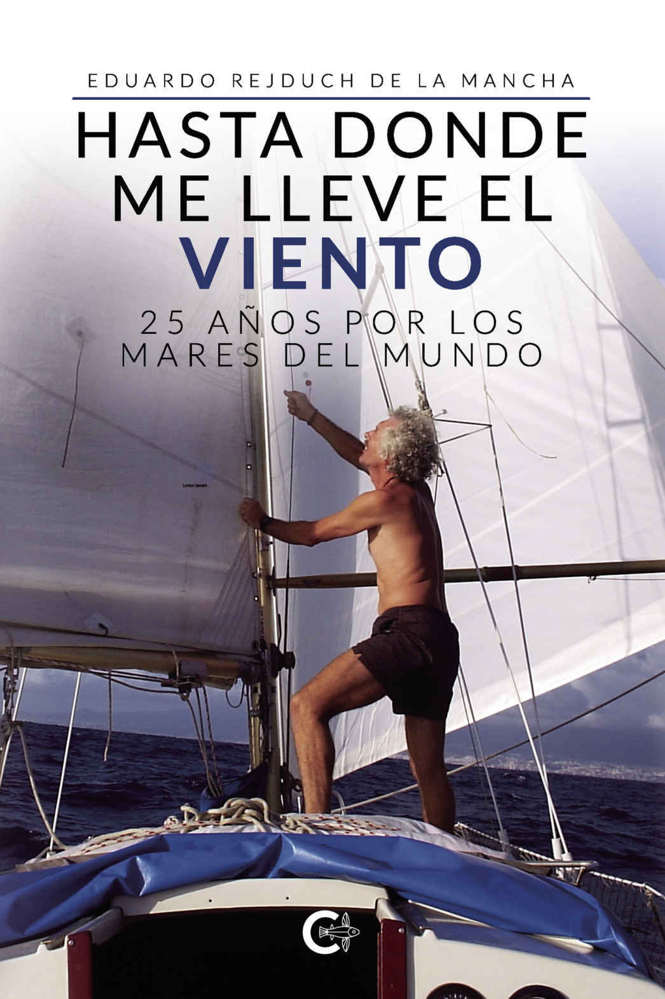
Hasta donde me lleve el viento. 25 años por los mares del mundo
Eduardo Rejduch de la Mancha, 2021
Atrapa tu sueño
Candelaria y Herman Zapp, 2007

El tiempo entre costuras
María Dueñas, 2009
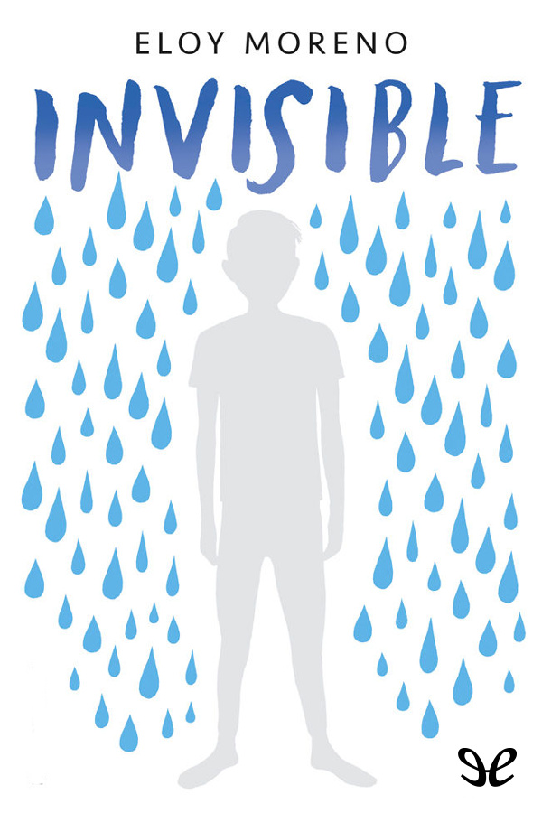
Invisible
Eloy Moreno, 2018
El barón rampante
Italo Calvino, 1957
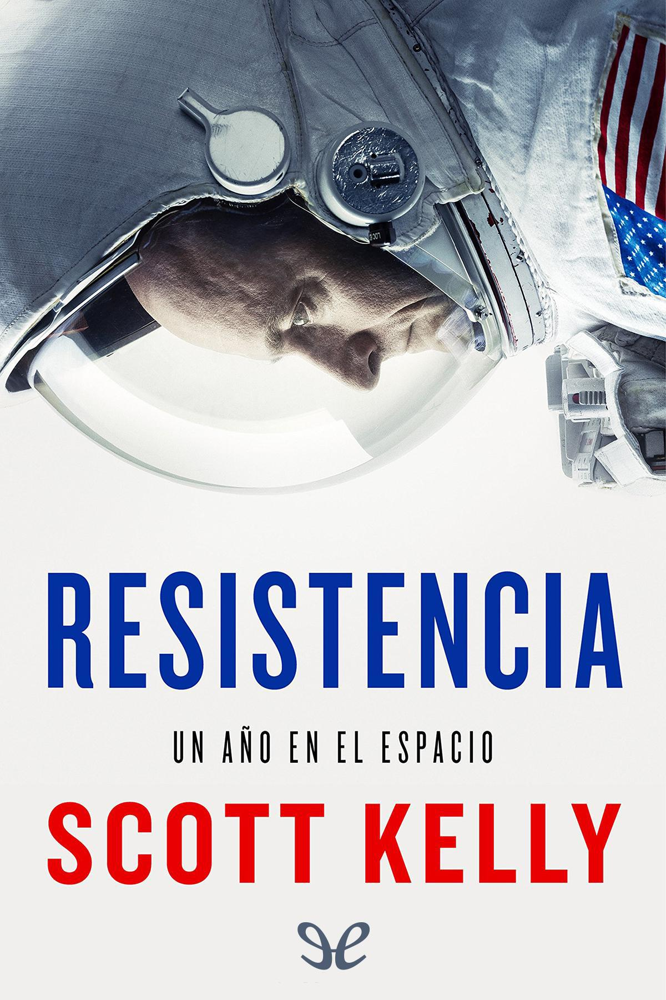
Resistencia: Un año en el espacio
Scott Kelly, 2018
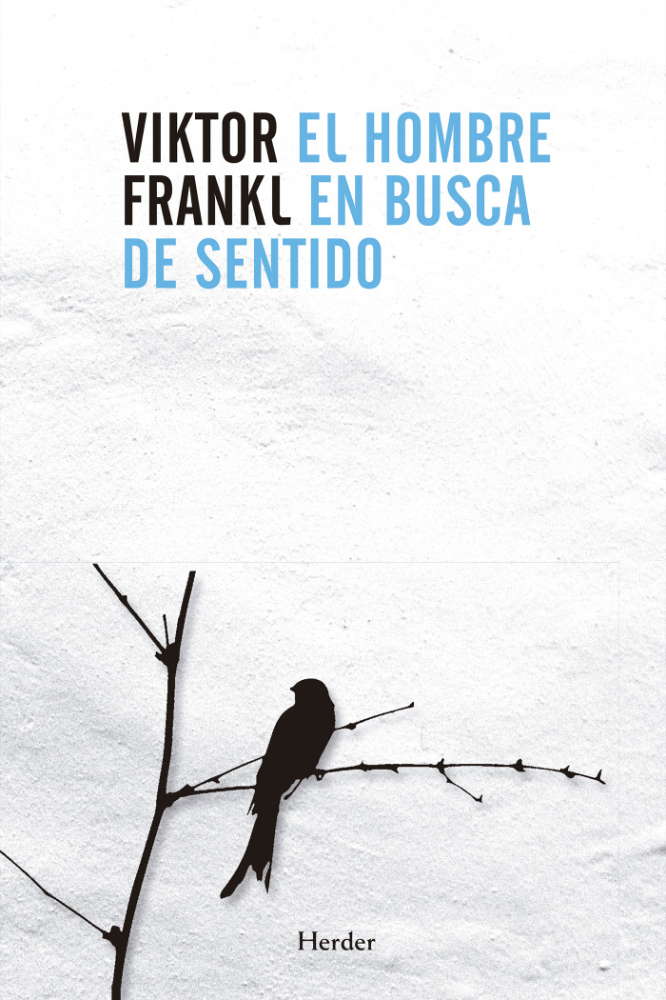